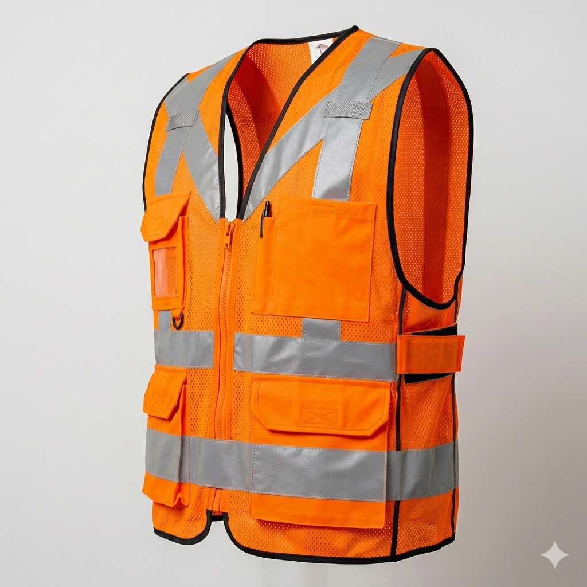

Disponibilidad
En Stock
Chalecos de Protección y Visibilidad
Equipo de protección personal para brigadas y personal de emergencia
Descripción
Los chalecos de protección de Centinela son equipos de alta visibilidad diseñados para personal en brigadas de emergencia, rescate y protección civil. Están confeccionados con materiales reflectantes de primer nivel que garantizan la visibilidad en condiciones de luz natural y artificial.
Son ideales para identificar fácilmente al personal autorizado durante operaciones de emergencia, facilitando la coordinación y comunicación en escenas complejas.
Normatividad Aplicable
NOM-017-STPS-2024
ANSI 107
ISO 20471
Características Principales
- Material 100% poliéster con banda reflectante de alta intensidad
- Disponible en múltiples colores: naranja, amarillo, verde y rojo
- Bolsillos funcionales para herramientas y equipos
- Cierre con velcro ajustable al cuerpo
- Costura reforzada para mayor durabilidad
- Fácil de lavar y mantener
- Certificado por organismos internacionales
Especificaciones Técnicas
Material
Poliéster 100% con banda reflectante de microprisma
Colores Disponibles
Naranja, Amarillo, Verde Fluorescente, Rojo
Tallas
XS, S, M, L, XL, XXL
Peso Aproximado
150 - 200 gramos (según talla)
Bandas Reflectantes
Mínimo 5 cm de ancho, alta intensidad
Bolsillos
2 bolsillos frontales con velcro
Cierre
Velcro ajustable, sistema de amarre lateral
Garantía
12 meses contra defectos de fabricación
⚠️ Consideraciones de Uso
- Verificar que el chaleco se ajuste correctamente antes de cada uso.
- Reemplazar si las bandas reflectantes pierden brillantez o se dañan.
- Lavar en agua fría para mantener las propiedades reflectantes.
- No exponer directamente a fuentes de calor intenso.
- Revisar periódicamente el estado del velcro y reemplazar si es necesario.
¿Necesitas este producto?
Contáctanos para obtener información sobre disponibilidad, precios especiales y servicio de instalación/colocación.
Contactar